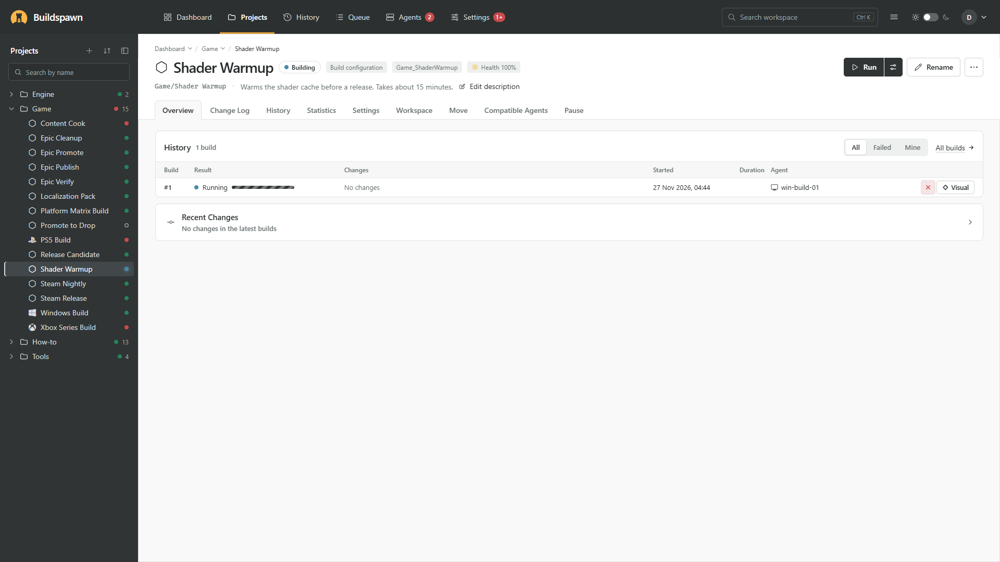

Stop a build
Stop a build that runs, or take a build out of the queue before it starts.
When to use it
Stop a build when you started it by mistake, when a newer change makes it useless, or when it hangs. A stopped build ends with the result Aborted. It keeps its log and what it did so far.
Stop a running build
- Open the running build. Click its number in the History tab, or in the Queue and Agents pages.
- Click Stop in the header. It replaces Re-run while the build runs. You need the permission to cancel builds of this build configuration.
- The build ends with the result Aborted.
You can also stop a build from the Agents page. Expand an agent's row and click the stop button beside the build it runs. In the terminal program, select the build in the Builds view and press x. That needs an API token.

What happens to the steps
- The step that runs is stopped.
- The steps after it do not run, except steps set to Always, even if build stop command was issued. Use that for clean-up steps. See Resume and retry.
- For a build with a Parallel block, the log says The build was stopped: stopping its side builds. Each side build stops too, with Stopped with ....
- For a parent of Parallel tests, stopping the parent stops its batches.
- A stopped build can be resumed or re-run. See Resume a build.
Take a build out of the queue
- Open Queue in the top bar.
- Click the … menu of the row and choose Cancel.
- Confirm Cancel the queued build of ...?
A build that waits for a personal machine that stays offline is cancelled for you after the time an administrator set, and its page says Cancelled: your machine 'name' was offline for N min. See Personal builds and shelves.
Problems and fixes
| Problem | What to do |
|---|---|
| There is no Stop button. | The build is finished, or you may not cancel builds of this build configuration. Ask a project administrator. |
| The build does not stop at once. | The tool a step started may need a moment to end. A step set to run always still runs after the stop. |
| The agent is gone and the build still shows as running. | Open the Agents page, check the agent, and stop the build from its row. |